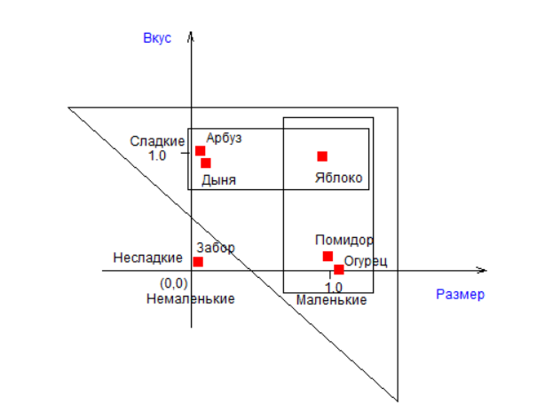
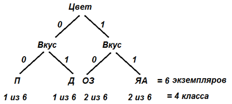
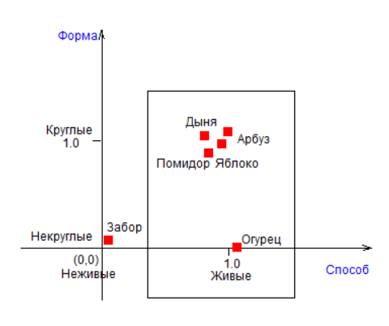
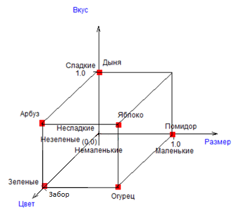
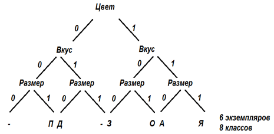

|
Лекция 28.
|
| Признак | Цвет(Ц) | Вкус(В) | Форма(Ф) | Размер(Р) | Способ размножения(С) |
|---|---|---|---|---|---|
| Цвет(Ц) | 1 | 0.58 | 0.5 | 0.58 | 0.77 |
| Вкус(Ц) | 0.58 | 1 | 0.87 | 0.33 | 0.77 |
| Форма(Ц) | 0.5 | 0.87 | 1 | 0.58 | 0.9 |
| Размер(Ц) | 0.58 | 0.33 | 0.58 | 1 | 0.77 |
| Способ размножения(Ц) | 0.77 | 0.77 | 0.9 | 0.77 | 1 |
Самой непохожей является пара признаков: «Вкус-Размер», у которых степень различия составляет 0.33, что составляет угол около 70° (близкий к 90°) между осями координат.
Можно сказать, что оси «Вкус-Размер» почти независимы. Точнее степень их зависимости (взаимозаменяемости) составляет всего 0.33.
Итак, во-первых, результаты нашего анализа позволяют утверждать, что Вкус менее всего связан с Размером. Во-вторых, исходные данные, приведённые в таблице, показывают: объекты бывают сладкие маленькие, сладкие немаленькие, маленькие несладкие и немаленькие несладкие. То есть связи между Вкусом и Размером действительно нет. А, значит, предполагается, что эти оси хорошо дифференцируют (разделяют) Объекты в пространстве Признаков. Посмотрите на рисунок – все объекты почти равномерно распределились по пространству признаков «Вкус-Размер».
Наглядно информативность двух осей, подсчитанную по формуле Шеннона, можно показать на дереве, например для признаков «Цвет-Вкус» - четыре слагаемых соответствуют четырём классам в распределении.


= - 1/6*log2(1/6) - 1/6*log2(1/6) - 2/6*log2(2/6) - 2/6*log2(2/6) = 1.92 (бит)
Наибольшая связь в данном примере наблюдается между координатами «Способ-Форма» (0.9). Действительно, исходные данные показывают, что если есть семечки, то объект круглый, исключение составляет только один объект «Огурец». Эти координаты практически взаимозаменяемы. Оси «Способ-Форма» хуже дифференцируют объекты, чем оси «Вкус-Размер». Объекты скучены в одной области и плохо различимы. Такие оси для задачи различения объектов почти бесполезны (информативность осей iфс ниже, чем в предыдущем случае iцв).

= - 1/6*log2(1/6) - 1/6*log2(1/6) - 0/6*log2(0/6) - 4/6*log2(4/6) = 1.25 (бит)
Итак, логично прежде всего принять за основу оси «Вкус-Размер». Но поскольку эти оси не полностью разделяют все объекты (путаются Арбуз с Дыней и Помидор с Огурцом), то в качестве дополнительных к основным осям ВР можно было бы добавить еще одну ось из оставшихся {Ц,Ф,С}. То есть следующую ось можно выбрать вычислением, присоединяя по очереди или Ц, или Ф, или С к ВР.
Испытав тройку осей «Вкус-Размер-Цвет», можно увидеть, что их достаточно для полной дифференциации всех объектов.

Информативность трёх датчиков-осей составляет:
iврц = - 6(1/n1*log2(1/n1)) - 2(1/n2*log2(1/n2)) = - 6 * 1/6*log2(1/6) - 2*0/6*log2(0/6) = 2.59 (бит)Такая же информативность у тройки ЦФР (2.59 бит). В этом смысле оси В и Ф взаимозаменяемы.
У нас получилось трёхмерное пространство: «Вкус-Размер-Цвет», которое изображено на рисунке - все объекты разнесены по пространству по одному, достигнута максимальная дифференциация.
А к примеру тройка ВФС имеет информативность 1.79 бит и является самой неудачной, так как датчики имеют бОльшую зависимость друг от друга. Исследование четвёрок, пятёрок и т.д. в этом примере информативность не повышают, так как трёх датчиков вполне достаточно для поставленной задачи.
Исследуя информативность пар, троек и более признаков, можно определить наилучшую комбинацию осей для представления робота о мире.
Остальные признаки, указанные в базе данных, избыточны. А тот, кто создавал исходную таблицу, проделал лишнюю работу, измеряя избыточные признаки.
Таким образом, мы определили размерность пространства существования наших объектов. Выбранные датчики «Вкус», «Размер», «Цвет», если их установить на робота, будут вполне справляться с задачей сортировки объектов. Заодно, заметим, что робот получил исчерпывающую информацию о мире заданных предметов и точно может дать определение каждому. Робот выделил и усвоил понятия мира заданных предметов.
Задания
- Загрузите с сайта упражнение «Метод косинусов». Задайте свой пример. Проведите классификацию. Найдите наилучшие оси координат. Определите размерность пространства. Опишите робота и картину мира в его сознании.
Презентация:
| Лекция 27. Метод ИИ #8 – метод косинусов | Лекция 29. Теоретическое обобщение | ||||||||||||||||
|
|||||||||||||||||